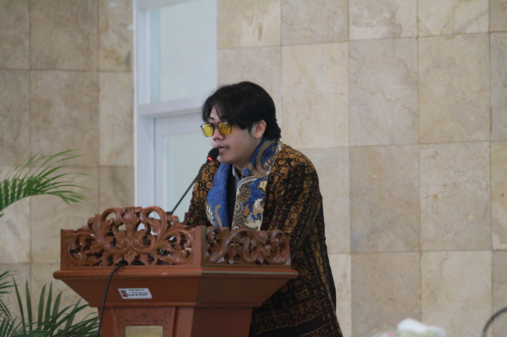

Experience
Where I've made an impact
Work and organizational leadership across policy, data, and community.
Work
-
Milan Pillery Bersatu
Freelance Flight Scientist
Sep 2026 — Present
Executed airborne cloud-seeding (OMC) for drought & disaster relief. Formulated post-flight mission documentation & operational logs.
-
Ministry of Human Rights of the Republic of Indonesia
Policy & Media Analyst
Jan 2026 — Jul 2026
Led media analysis & strategic policy communications. Coordinated cross-functional stakeholders for national programs.
-
PT Pelabuhan Indonesia (Persero)
Research & Data Analyst
Aug 2025 — Dec 2025
Executed data-driven research on post-merger alignment. Delivered executive-ready insights from large-scale survey data.
-
Auto2000 Yasmin - PT Astra International Tbk
Account Executive
Oct 2023 — Apr 2024
Managed client CRM database & targeted sales strategies. Presented Toyota product solutions to diverse clients.
Internship
-
Fresh Graduate Academy — Digital Talent Scholarship
Data Science
Sep 2023 — Oct 2023
Learned the full Data Scientist workflow: visualizing and communicating data, building dashboards, understanding database concepts, and Machine Learning fundamentals including supervised models (regression & classification). Collaborated with Kominfo and Binar Academy.
-
Bangkit Academy 2023 — Google, GoTo, Traveloka
Machine Learning Path
Feb 2023 — Jul 2023
Learned key AI concepts and applications to solve a wide range of ML problems, including Google IT Automation with Python, DeepLearning.AI TensorFlow Developer, and TensorFlow Data & Deployment. Capstone project: "Skinnea" — a skin disease prediction app using ML for predictions, an Android app, and an API to integrate the model into Android.
-
Pelabuhan Ratu Urban Village
Mobile Application Developer
Aug 2021 — Sep 2021
Developed an Android-based population data application for Palabuhan Ratu Urban Village as a practical field experience, digitizing population data management for the local community.
-
Ministry of Education, Culture, Research, and Technology
Kampus Mengajar Batch 1
Mar 2021 — Jun 2021
"Kampus Mengajar" is part of the "Kampus Merdeka" initiative that invites students in Indonesia to assist teachers and teach elementary school students in the 3T (frontier, outermost, and disadvantaged) areas.
Organizational

-
Indonesian Liberty Society (ILS)
Co-Founder
Oct 2024 — Present
Co-founded a national network advocating individual liberty & free markets. Drives strategic outreach and community-building initiatives.
-
Students For Liberty Indonesia
Local Coordinator
Feb 2022 — Present
Organized national forums & leadership seminars on critical thinking. Represented Indonesia at Asia-Pacific retreats in SG, MY, and Thailand.
-
Komunitas Literasi Nusantara (KLN)
Executive Board Chairman
Aug 2019 — Present
Directed NGO operations promoting rational & objective digital literacy. Project Manager for National Seminar on Digital Transformation & Cybersecurity.
-
Legislative Student Board (BLM FMIPA UNPAK)
Head of Commission 1
Nov 2020 — Mar 2022
Drafted and enacted student legislation within the faculty. Supervised executive student bodies and advocated student family needs.
-
Executive Student Board (BEM FMIPA UNPAK)
Member
Feb 2019 — 2022
Managed leadership training committees and faculty activities. Speaker on "Logic" and "Teamwork" for student development programs.